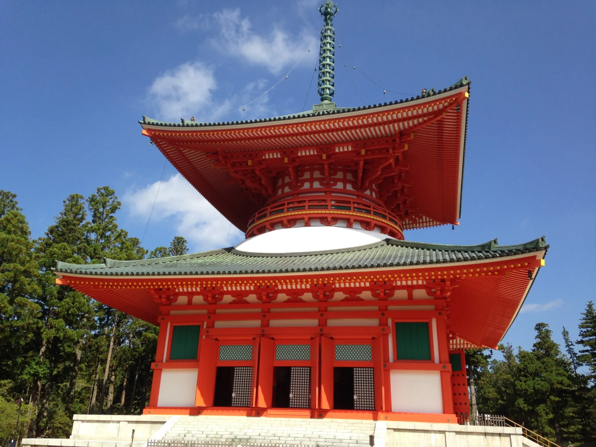

Danjo_garan, l'an 816
C'est un lieu situé à Koyasan, il a été construit par Kôbô Daishi


C'est un lieu situé à Koyasan, il a été construit par Kôbô Daishi
Lieu de pèlerinage situé dans la région du Kansai
Temple situé à l'ouest de Kyoto, au pied du Mont Atago

Situé dans la ville de Nikko, près de la riviere Daiya
Montagne sacré situé au sud de Osaka